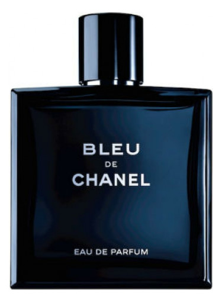

Fragrance Realm

Bleu de Chanel
Price: 100 EUR
Description: Bleu de Chanel Eau de Parfum by Chanel is a Woody Aromatic fragrance for men. Bleu de Chanel Eau de Parfum was launched in 2014. The nose behind this fragrance is Jacques Polge. Top notes are Grapefruit, Lemon, Mint, Pink Pepper, Bergamot, Aldehydes and Coriander; middle notes are Ginger, Nutmeg, Jasmine and Melon; base notes are Incense, Amber, Cedar, Sandalwood, Patchouli, Amberwood and Labdanum.
Main accords:
- citrus
- amber
- woody
Top Notes: Lemon
Middle Notes: Melon
Base Notes: Amber